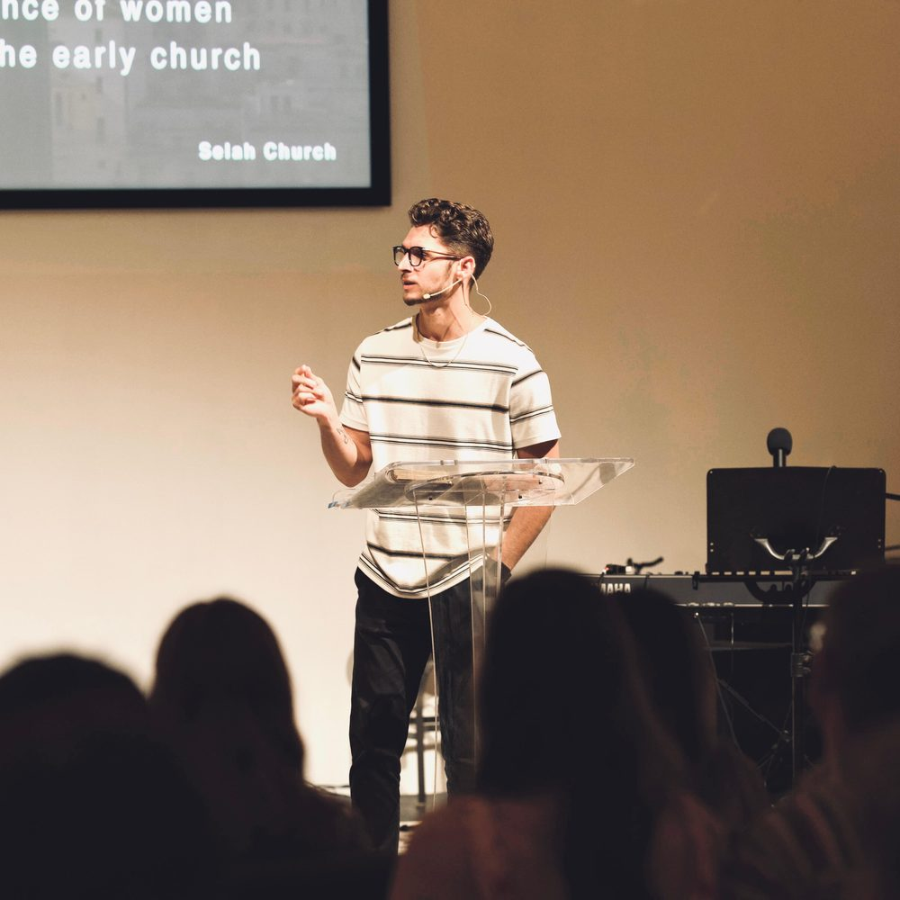

Our Team
The people you’ll meet here.
Selah is led by people who’d rather know your name than fill a seat.
Selah is led by people who’d rather know your name than fill a seat.
The people leading and serving alongside you at Selah.

Luke and Amanda have been married since 2020 and are the proud parents of Maverick Isaiah, with their daughter, Haven Joy, on the way. Together, they’ve served in full-time ministry for over a decade. Before planting Selah, Luke served as a campus pastor at the University of Mary Washington for several years, and holds a Master of Divinity with a concentration in Spiritual Formation from Regent University. In 2022, Luke and Amanda planted Selah Church as a simple house church. At the heart of their ministry is a deep desire to follow the leadership of the Holy Spirit, faithfully teach God’s Word, and create a place where people can encounter Jesus.
Amanda spent several years serving overseas with Youth With A Mission (YWAM), helping lead and disciple young missionaries.

Jordyn has been leading worship for over a decade and is passionate about creating spaces where people can encounter the presence of God. She’s been a pivotal leader in Cabin Worship, a movement dedicated to unifying the Body of Christ in Fredericksburg. Jordyn has been married to her husband, Matt, for over 15 years, and together they’re raising their three children: Emma, Finn, and Sparrow. As Worship Director, she faithfully leads the congregation into God’s presence while investing in and developing the next generation of worship leaders.

Kylie has a deep love for children and a heart for helping the next generation know and follow Jesus. As the daughter of missionaries, she grew up serving alongside her family in Loreto, Peru. In 2018, Kylie graduated from Liberty University with her bachelor’s degree, and has since spent several years working with children in educational and ministry settings. In 2024, Kylie married her husband, John, and together they’re expecting their first child this fall. She’s passionate about partnering with parents to create a safe, engaging, and Christ-centered environment for children.
Roles and bios sourced from Selah’s own team page (selahchurchfxbg.com/ourteam) as of 2026-07-31 — worth a quick confirm with Luke’s team before this goes live in case anything’s changed since. Amanda is still the one person without a headshot.